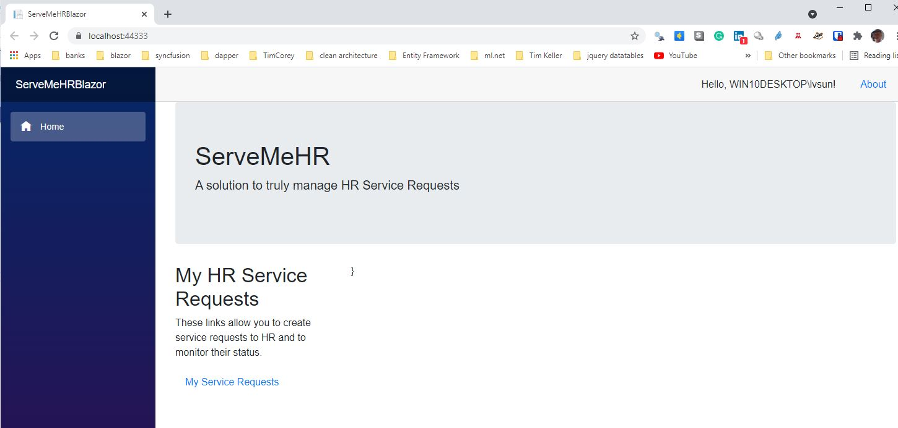

TL;DR; The HR Innovator Role is hard to find in organizations
Introduction
Did the above title grab your attention? It is my hope that it did.
In my 40 years or so in the combined and separate fields of Human Resources and Information Technology, it has occurred to me that as HR professionals we can be in the Human Resources field in at least one of 3 ways.
We can be:
An HR Innovator or
An HR Caretaker or
An HR Undertaker
Which are you? Which do you want to be or be known for? Which will you be known for?
It may be helpful to provide some generic definitions around these roles and then consider what flavor that might have in the field of Human Resources. From Oxford English Dictionary
Innovator
-a person or company that introduces new things, ideas or ways of doing something
Caretaker
-a person who takes care of a house or land while the owner is away
Undertaker
-a person whose job is to prepare the bodies of dead people to be buried or cremated, and to arrange funerals
What might be an equivalent meaning or role within HR work?
HR Innovator
- an HR professional or a profession that is always on the lookout for new ways of doing things. This isn’t as much meant in the abstract, but rather in the context of ‘performing the work of HR better’ and therefore more productive. In other words - not change for changes sake, but change for seeking out continuous improvement in the way we do our HR work and profession. Better AND faster. Status-quo for status-quo sake is not an option for innovators.
HR Caretaker
- an HR professional or a profession that is satisfied with traditional HR practices in the HR field and in their organization. The HR practices may or may not be perceived as inadequate by the organization. Both the organization and HR may have a sense of security around relatively unchanging predictable practices by their own choice. Status-quo is not only an option here - but seen as a preferred way of being.
HR Undertaker
- an HR professional or a profession that is either presiding over its own demise within the organization or is presiding over the demise of the organization (possible in part due to HR practices that were incompatible with helping to keep the organization competitive in its business environment.). Sometimes contracting out of HR or shared services is an outcome of this or expression of it.
In my career, I have seen examples of all 3. Having said that- I have found the HR Innovator role to be in the minority of organizational examples. The HR Caretaker role is the predominant one. And the HR undertaker role being more in a majority than the HR Innovator role, but still in a minority as compared to the HR Caretaker role. The HR Undertaker role will often be when HR has either lost its relevance to the organization or can be effectively outsourced for better performance.
Why am I sharing this?
For the most part - I believe that HR professionals who are dedicated to the profession / discipline / practice of HR want to be Innovators and seen as such. ‘Same old’, ‘same old’ is not sufficient. They want to see their HR profession thrive. I also believe that ‘few if any’ HR professionals want to be or be seen as undertakers. Demise is not fun. But sadly, I think that too many HR professionals are quite content to be in the Caretaker role. Not much risk there, and the predictability of traditional HR practices brings a sense of security (albeit possibly a false one).
When you look at the above role approaches, the innovator is a ‘proactive’ role. The caretaker and undertaker are reactive roles. And given enough time, the caretaker role/mentality can lead to the undertaker role. All it takes ,with enough time, is for external and outsourced alternatives to outperform in-house resources for caretakers to become undertakers.
How do we prevent that from happening?
How Do We Encourage Pro-activity And Minimize Reactivity In Our Role?
We ‘intentionally’ seek to move from ‘caretaker/undertaker’ roles to ‘innovator’ roles and mindsets. We go from reactive to proactive. Its more than just words and ‘wishful or blissful’ thinking. Believing that you are proactive and an innovator doesn’t make it so. It has to be demonstrated. It doesn’t happen without overt ‘intention’ and the actions that follow from that intention.
It might be helpful to understand that we are so often traditionally reactive in Human Resources and why this is the case.
Let us consider a typical day in HR work.
Other than those things in HR that are recurring - often on the basis of the calendar and known ahead of time and therefore are predictable - the bulk of HR work is on a ‘demand’ basis:
Requests typically come in to HR either by email or phone
those requests are performed and completed
the end results are send back to the email originator or phone caller
When we are finished with the request its time to start the next one. The current/last one is now out of mind and out of sight unless there is some complaint or problem with what was provided.
In most organizations, the rate of completing and getting the requests out is far outpaced by the volume and the rate of requests coming in. As a result there is almost always a backlog with requests waiting to be performed. If the backlog and wait is long enough- it drops way down in our list of received emails and is forgotten until the requester emails or phones again to complain ‘why is this taking so long?’.
So much for good customer service, good intentions, pro-activity and innovation…
Whether we realize it or not, or see ourselves as such, HR is a ‘service provider’. We are ‘in the business’ of providing HR services to the organization and to external stakeholders. They are our ‘customers’. When we perform well then we are treating them well and they are happy customers. When we delay, take forever to complete or don’t keep track of what they have requested of us, then they are disgruntled and will look elsewhere if they can. We can perform well or poorly. And by the way- this is the only ‘performance’ that counts- regardless of performance appraisals. Our customers dont give a ‘darn’ about our performance appraisals. Each request they have of HR is a ‘moment of truth’ where the reputation of HR is confirmed and verified- good or bad.
While the ‘demand’ basis of HR work is our reality-and therefore to a certain degree out of our ability to control the demand- our response to that demand IS under our control. That response is a choice- we can be proactive in our response or reactive.
I think its important to think of ourselves as ‘performing’ in the business of providing HR Services to customers and that they evaluate that performance. But I think its important to think about performance as well because it is at the heart of the purpose of HR Analytics . HR Analytics- by its very nature- requires us to proactive.
How Does HR Analytics Fit Into All Of This?
For those of you who have read my book, or many of my blog articles- you know that I see HR Analytics as ‘data driven’ Human Resource’ management and decision making. And that its purpose is to help the organization to ‘perform’ better. (Otherwise why do we or should we do it?). I typically see fertile ground for HR Analytics, and therefore possible pro-activity, in at least 3 HR domains- Traditional HR metrics, HR practices , and HR operations.
To even know how we are ‘performing’ requires data and measurement:
When we provide traditional HR metrics to the organization and proper multivariate statistical analysis of these to gain insights into what is going on and why- we are positioning the organization to perform better. If for no other reason that we are making the information known and visible. But primarily because we can make better decisions because of the visibility and we can be ‘proactive’ about what we found. For many of you- this is the world of HR Analytics that you know and recognize. The problem is - that isn’t the boundary of HR Analytics - not even close. Many organizations don’t go beyond that.
When we make use data science and machine learning algorithms and revisit our current traditional HR practices and retool them where applicable- we are affecting performance in our practices and for the better. This is done with data and measurement. The purpose of using such tools is to increase the quality (reliability and accuracy) of decisions and the speed at which they’re made. Some of you as organizations know ‘this’ potential of data science and machine learning to dramatically increase your effectiveness and competitiveness and have started down this path. When we are making conscious decisions on improving performance we are ‘proactive’ in a business that is demand driven.
When we monitor HR operations on an ongoing basis, we are gathering data and the summarizing of that data is measurement. When we use that data to make changes in our operations we are being ‘proactive’ in our sphere of influence and environment- even though the environment itself is demand -driven. The environment itself may be less under our control but our response to it is under our control.
All of these examples serve to take us beyond wishful / blissful thinking and talking the talk about being ‘innovators’ - to actually walking the walk. HR Analytics- because of its requirements on data, measurement, analysis and appropriate action- make it indispensable to the role of being an HR Innovator.
Having said that- of the three domains of applicability above- the one that will likely have the most long term sustained impact on pro-activity and innovation will be the last one mentioned. Why is this? At the 30,000 foot level its because the first two domains are specific identifiable projects - or efforts once projects are completed. The last one is ‘everything else’ we do in HR (probably more that 90% of our work).
Truly managing HR operations requires ongoing data gathering and measurement of our HR activity. Managing any other way is ‘management by exception’ . You will find it very difficult , if not impossible, to proactively manage without gathering data on your operations on an ongoing basis. Without data you wait till ‘something’ hits the fan and then you deal with it. That ISN’T innovation- its management by reaction.
But how does this occur? How do we monitor and measure HR operations on an ongoing basis?
A Radical Change In Thinking Is Necessary
One of the things that I cover in my book is a chapter on ‘thinking informationally’ when it comes to the field of Human Resources. This includes seeing HR with an eye to
what business processes make up HR
what information is generated by those business processes
what are their steps, inputs and outputs
how we measure these.
When it comes to HR Operations this ‘thinking informationally’ is particularly true.
Lets go back for a moment to the typically ‘day-in-the-life’ of HR mentioned above:
Requests typically come in to HR either by email or phone
those requests are performed and completed
the end results are send back to the email originator or phone caller
When we are finished with the request its time to start the next one. The current/last one is now out of mind and out of sight unless there is some complaint or problem with what was provided.
In most organizations, the rate of completing and getting the requests out is far outpaced by the volume and the rate of requests coming in. As a result there is almost always a backlog with requests waiting to be performed. If the backlog and wait is long enough- it drops way down in our list of received emails and is forgotten until the requester emails or phones again to complain ‘why is this taking so long?’.
Some questions to consider:
Is this radical change in thinking ?
Is this measurement of HR operations?
Is this thinking informationally?
Is this proactive?
Is this innovative?
No. This is status quo, passive, and reactive.
What HR in many organizations fail to realize is that those email requests to HR are the lifeblood of HR and a goldmine of data and information. The problem is that in their current form - ‘emails’ do not lend them themselves to measurement. You get them, you work on them, and complete them. Then they are ‘out of sight,out of mind’. About the only thing recorded by email systems is date and time they came in. In fact, there may be many more emails back and forth before you have completed the request- some of which may be status update requests on the original request.
The key question in HR Operations is ‘what to measure?’. The answer ‘at a bare minimum’ is:
how long did it take from receipt of the request to its completion.
And how much of that is ‘wait time’ in a queue and how much is actual ‘performance time’.
And its measuring EVERY SINGLE request. Period. To innovate here is to minimize wait time as much as possible- if not eliminate it- and then to continually improve our business process to minimize performance time of actually doing the work. This isn’t accomplished by exhortation and supervisory pressure or coaching or performance appraisals either- but by redesigning HR business processes and practices- so that performance is effortless within them. That the processes aren’t working against the completion of requests. And that the delivery of completion of requests is predictable and pleasing. Beyond the bare minimum of wait time and performance time- the performance time between and of steps to complete could/should also be measured as part of process improvement.
But email systems will NEVER be able to deliver on that.
Ever wonder why Amazon is so successful and why so many of us shop there? IT’S THEIR RELIABILITY, PREDICTABILITY AND PERFORMANCE.
We place an order
There’s virtually no wait time on the transaction.We get confirmation right away of the order.
We get confirmation when its being processed
We get confirmation when its shipped
We get confirmation when its delivered
Behind the scenes our orders are monitored every step of the way
Under Amazon Prime we often get reliable predictable 1-2 day completion of order from inception to completion.
Amazon monitors every order ‘cradle to grave’.
Customers are kept in loop till package delivered
Every transaction in a ‘moment of truth’.
This hasn’t happened by accident or by wishful blissful out of sight, out of mind thinking. It happened because the power of data and measurement was seen for its ability to allow innovation. Shouldn’t this be just as true for our HR profession, HR Operations and HR work?
So if status quo and email systems aren’t the answer- what is?
Service Request Tracking Systems
‘Well designed’ service request tracking systems allow for inclusion of a ‘heading’ and a ‘description’ of a request like emails. But they also allow for so much more. They can:
Be browser based - so that a variety of devices and operating systems can be used as clients.
allow for tracking- inception to completion- both by the organization and its customer.
allow for different HR teams to get their specific requests and only see theirs.
show current status - on demand.
automatically log date/time of receipt of request- and send a confirmation email
allow for attachment of documents
log date/time of when request was actually started, and its completion too.
show history of who it was assigned to and when(date/time).
show more granular steps of transaction and their timing.
allow for subsequent notes to be added during its life.
accumulate at least minimum data to evaluate the performance of our HR processes.
What Might These Look Like?
Be Browser Based
What The User Sees

What The Team Sees
What The Administrator Sees
Allow For Tracking By Requester And The Organization
Requester
List
Details
Organization
List
Details
Allow for different HR teams to get their specific requests and only see theirs.
Team
List
Details
Individual Assigned To
List

Details
Show Current Status
Automatically Log Date and Time of Receipt
Allow For Attachments
Log When Started And Completed
Show History of Who It Was Assigned To And When

Show More Granular Steps of The Request And Their Timing

Allow For Subsequent Notes To Be Added
The use of Service Request Tracking Systems- goes far beyond email:
Every request is logged.
Every request is tracked from inception to completion.
Customers(requesters), teams, and administrators all kept in loop on demand- with each entity seeing and modifying only what they are supposed to
Data is accumulated on an ongoing basis which can allow for measurement of how we are actually ‘performing’.
With that accumulated data and other analytical and statistical tools we can analyze
the volume of requests over time
what types of requests they are
who’s worked on them
how long they sat in waiting
how long they took to perform
what extra resources might be necessary to reduce wait time and for how long.
start seeing what can be done to reduce performance time by process/work redesign
Those of you who have read my book
Doing HR Analytics- A Practitioner’s Handbook With R Examples
will recall that one of the examples of HR Analytics was the measurement of HR operations with statistical process control charts. The types of data used come from Service Request Tracking Systems such as this.
Conclusion
Being an HR innovator is more than words.
Simply believing that ‘we are’ doesn’t make it so. To know whether we are innovators and are innovating requires measurement and data accumulation. Innovation requires that something needs to be better than it was. In the context of HR innovation- it means that we perform better or something we do/use performs better or both. That ‘perform better’ can be assessed through measuring our service business processes directly, and indirectly from customer satisfaction.
And whether we like it or not- most of the performing better comes from reducing the time between of request receipt to request completion without compromising quality. This is the true measure of ‘productivity’. And it almost always ‘delights’ the customer.
Measuring and being able to measure is a key differentiator between being an innovator as compared to being a caretaker or undertaker. By the same logic- the ‘presence of and application of’ HR Analytics to HR desision-making and HR management is also a key differentiator between the innovator versus caretaker/undertaker roles. In fact, absence of it is very likely to be the obstacle that limits HR from moving beyond its traditional caretaker/undertaker roles.
I come back to some critical questions for the HR profession:
Which of the above roles is your HR function known for?
Which do you want it to be or be known for?
Which will you be known for?
When it comes to innovation are you ‘walking the walk’ or simply ’talking the talk”?
Finally, I leave you with the following quote from W. Edwards Deming:
“You cannot manage what you do not measure”.
Does this mean we are not truly managing if we are not measuring?
Is managing by exception really managing?
Sobering thought and questions!
Addendum: About ServeMeHR
ServeMeHR is a prototype web based application that I have developed. One of the things I do in my hobby time is to develop HR related software applications using Microsoft’s developer tools to prototype ideas that I have - that may help HR to perform better. (In fact, I have used earlier versions of this written in earlier technologies in the past to manage,monitor, and measure the work of my team.) I do this as well to keep up on the software developer technologies and with the intent that it ‘hopefully’ helps organizations ‘walk the walk’ with respect to innovation and doing HR work better.
This particular prototype is written in C# as a Microsoft Blazor Server application with Microsoft SQL Server as the backend database. It’s a web based ‘intranet’ application designed to be used within an organization- not externally. It uses Windows Authentication. I am still doing software testing on my current technology version of it and wanting to write documentation regarding its features and how to use it.
If there is sufficient interest in this application, I ‘may’ put it out in the public domain under the GPL 3.0 license for review and use. Under that type of licensing, it could be copied, modified, and enhanced freely by users without any charge- but not be sold/resold for profit. And its ongoing support would be up to users themselves in their own organizations.
My motivation here - more than anything - is to influence, enable, and help the HR profession and HR practitioners to be increasingly more innovative.
About Lyndon Sundmark, MBA
Lyndon is a retired HR Professional with over 40 years experience of applying a ‘data-driven’, ‘evidence based’ mindset to HR practices in organizations in a variety of roles and industries.